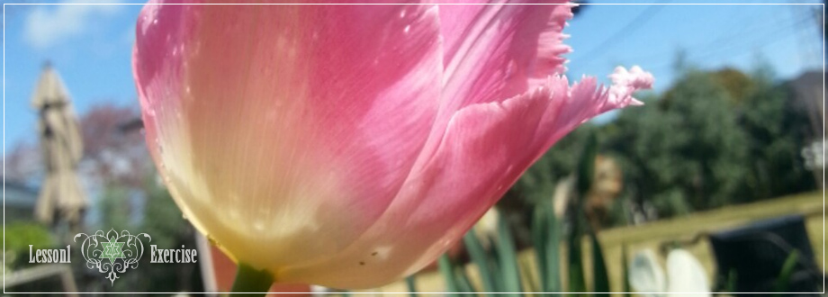
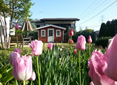

NEWS
- 2013/06/01 新着ニュースの文章か記入されます。テキストテキストテキストテキストテキストテキストテキストテキストテキスト
- 2013/06/01 新着ニュースの文章か記入されます。テキストテキストテキストテキストテキストテキストテキストテキストテキスト
- 2013/06/01 新着ニュースの文章か記入されます。テキストテキストテキストテキストテキストテキストテキストテキストテキスト
- 2013/06/01 新着ニュースの文章か記入されます。テキストテキストテキストテキストテキストテキストテキストテキストテキスト
- 2013/06/01 新着ニュースの文章か記入されます。テキストテキストテキストテキストテキストテキストテキストテキストテキスト
PICK UP
|  | チューリップはユリ科チューリップ属の植物。球根ができ、形態は有皮鱗茎。和名は鬱金香（うこんこう、うっこんこう）、中近東ではラーレと呼ばれる。アナトリア、イランからパミール高原、ヒンドゥークシュ山脈、カザフスタンのステップ地帯が原産。（ウィキペディアフリー百科事典より） |
| 原産地はトルコのアナトリア地方とされ、トルコ国内の宮殿(トプカプ宮殿等)やモスク(ブルーモスク等)に貼られたタイルに描かれている。生産地ではオランダが非常に有名で、各国へ輸出されている。トルコからオランダにチューリップが伝わったのは16世紀頃。日本のホームセンターや園芸品店で販売されている球根は、ほとんどがオランダからの輸入である。（ウィキペディアフリー百科事典より） |